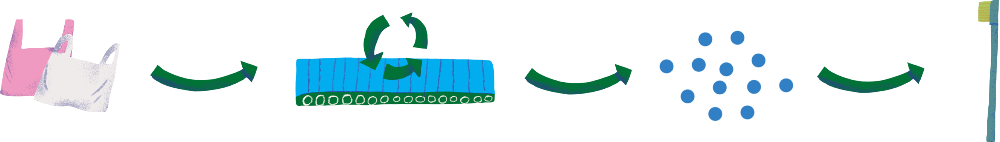
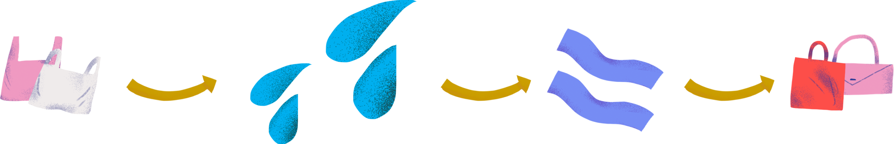

<link href="https://fonts.googleapis.com/css2?family=Montserrat+Alternates:ital,wght@0,100;0,200;0,300;0,400;0,500;0,600;0,700;0,800;0,900;1,100;1,200;1,300;1,400;1,500;1,600;1,700;1,800;1,900&display=swap" rel="stylesheet">
<link rel="stylesheet" href="./css/second-dictionary-section.css">
<section class="second-dictionary-section">
    <header class="header">
        <div class="header-logo">
            
        </div>
        <nav class="header-menu">
            <div class="header-menu-items-finished">
                <li class="second-header-menu-item"><a href="">Урок 1</a></li>
                <li class="second-header-menu-item active"><a href="">Урок 2</a></li>
            </div>
            <li class="second-header-menu-item"><a href="">Урок 3</a></li>
            <li class="second-header-menu-item transparent"><a href="">Урок 4</a></li>
            <li class="second-header-menu-item transparent"><a href="">Урок 5</a></li>
            <li class="second-header-menu-item transparent"><a href="">Екоекзамен</a></li>
            <li class="second-header-menu-item main"><a href="">Головна</a></li>
        </nav>
    </header>
    <main class="second-dictionary__content">
        <h2 class="dictionary__content-title">Екословник</h2>
        <div class="dictionary__content-paragraph">
            <h4 class="second-dictionary__content-paragraph-term">Компостування</h4>
            <p class="dictionary__content-paragraph-text">процес перетворення органічних відходів на корисні добрива для ґрунту. Оце магія, якщо не палити, а компостувати опале листя, то на цьому місці можуть вирости весняні квіти. Закомпостував шкірку від банана — отримав гумус (добриво), викинув у смітник — маєш випаровування у вигляді метану на звалищі. Вибір за тобою.</p>
        </div>
        <div class="dictionary__content-paragraph">
            <h4 class="second-dictionary__content-paragraph-term">Вторсировина</h4>
            <p class="dictionary__content-paragraph-text">відходи, які можна здати на переробку. Товари із вторсировини дешевші, бо виробникам не потрібно закуповувати матеріали, а просто переробити те, що є. Переробка вторсировини створює нові робочі місця, є більш екологічною з точки зору виробництва та не утворює полігони сміттєзвалищ. І взагалі, вторсировина рулить!</p>
        </div>
        <div class="dictionary__content-paragraph">
            <h4 class="second-dictionary__content-paragraph-term">Переробка<br><span>(або англійською recycling)</span></h4>
            <p class="dictionary__content-paragraph-text">процес перетворення відходів у багаторазовий матеріал або продукт.</p>
        </div>
        <div class="second-dictionary__content-recycling">
            
            <div class="second-dictionary__content-captions pl20">
                <p class="second-dictionary__content-caption mr93 ml20">Пластик збирають та відправляють на переробку</p>
                <p class="second-dictionary__content-caption mr88">Там він подрібнюється та піддається термічній обробці</p>
                <p class="second-dictionary__content-caption mr30">Після чого перетворюється на гранули</p>
                <p class="second-dictionary__content-caption">Далі отримує нове життя</p>
            </div>
        </div>
        <div class="dictionary__content-paragraph">
            <h4 class="second-dictionary__content-paragraph-term">Апсайклінг<br><span>(upcycling)</span></h4>
            <p class="dictionary__content-paragraph-text">повторне використання готового матеріалу без його переробки.</p>
        </div>
        <div class="second-dictionary__content-upcycling">
            
            <div class="second-dictionary__content-captions">
                <p class="second-dictionary__content-caption w124 mr121">Збираємо весь пластик, що є у домі</p>
                <p class="second-dictionary__content-caption w108 mr93">Далі миємо та дезинфікуємо</p>
                <p class="second-dictionary__content-caption mr44">Робимо із пластику потрібний матеріал для роботи</p>
                <p class="second-dictionary__content-caption w124">Створюємо з цього стильну сумку чи предмет декору</p>
            </div>
        </div>
    </main>
    <footer class="dictionary__footer">
        <div class="dictionary__footer-block">
            <a href="" class="dictionary__footer-link">Eкофакти</a>
            
        </div>
    </footer>
</section>